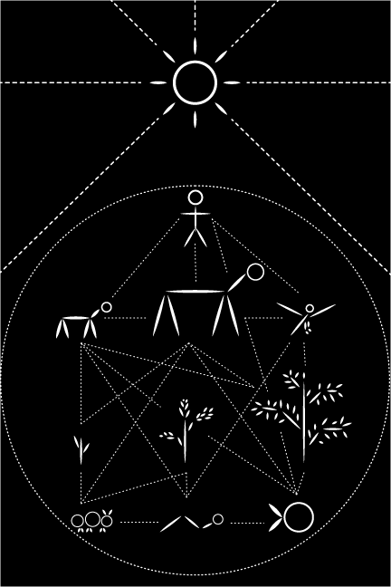

This poster design was created for my special studio in computer graphics course at Binghamton as a means of making us think outside the box. The given prompt was to create some sort of image that could be used to communicate with extraterrestrial beings. I chose to design a simple ecological web showcasing various living beings on Earth including humans, mammals, fish, birds and plants. I connected the beings to show how we are all interdependent on each other and all coexist in the same world. I feel as though this image is informative, yet leaves a lot to interpretation. The simple line work for the symbols is timeless and draws inspiration from prehistoric cave art, so I feel it would be able to withstand the test of time and space.
